関東鶏白湯の先駆け
M E N D O I N A B A
鶏だけで炊いたスープの、らーめんとつけめん。
茨城・古河と埼玉・久喜の二軒でお出ししています。
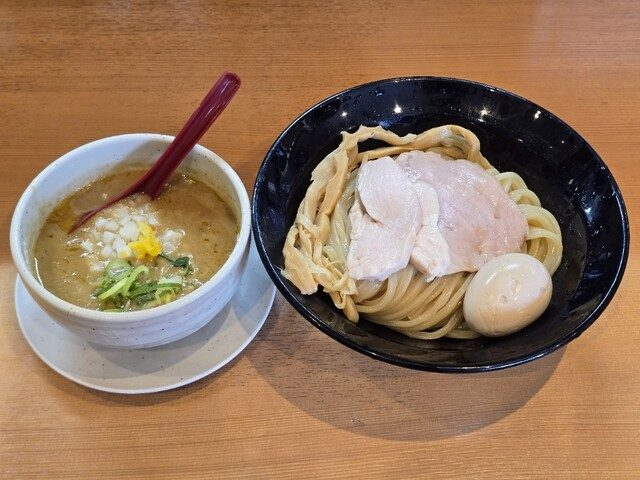
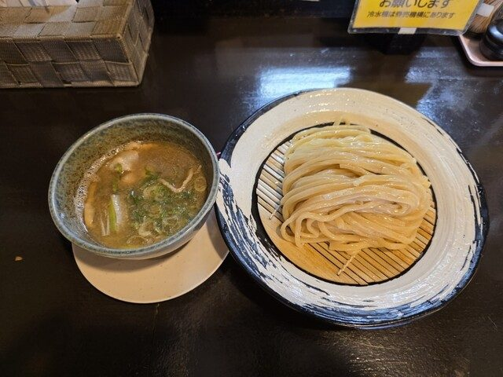
鶏白湯という言葉がまだ知られていなかった頃から、鶏だけで炊いたスープでらーめんとつけめんをお出ししてまいりました。 濃さの違う二つのスープ——じっくり炊いた鶏白湯と、澄んだ鶏清湯——をご用意しております。
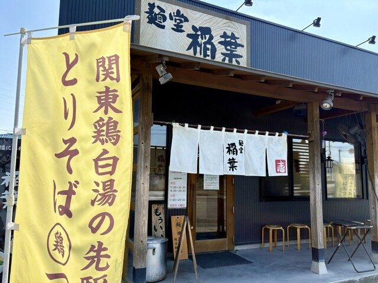
2013年に古河で始めてから、鶏のスープ一本でやってまいりました。 定期的にお出ししている限定のお品も、この鶏白湯からつくっております。
磯屋商店さんに、当店のスープに合わせた麺を特別につくっていただいております。 二軒とも、店頭にその木札を掲げております。
店名は、私どもの好きな歌い手さんのお名前から頂戴したものです。
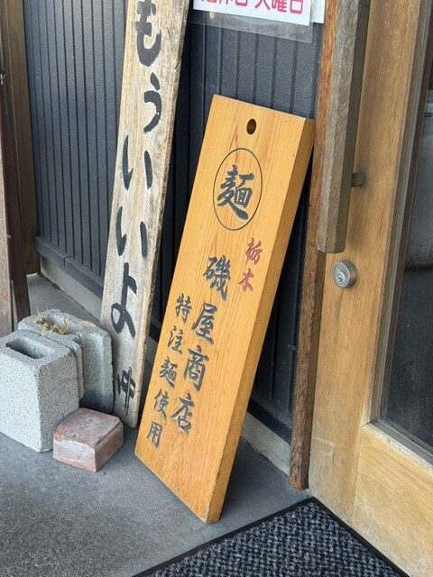
らーめんもつけめんも、スープの濃さとタレをそれぞれお選びいただけます。 濃厚な鶏白湯であっさりの塩、澄んだ鶏清湯で醤油、というお召し上がり方もできます。 マー油を落としたとりそば黒、揚げねぎと揚げねぎ油を利かせた一杯もございます。
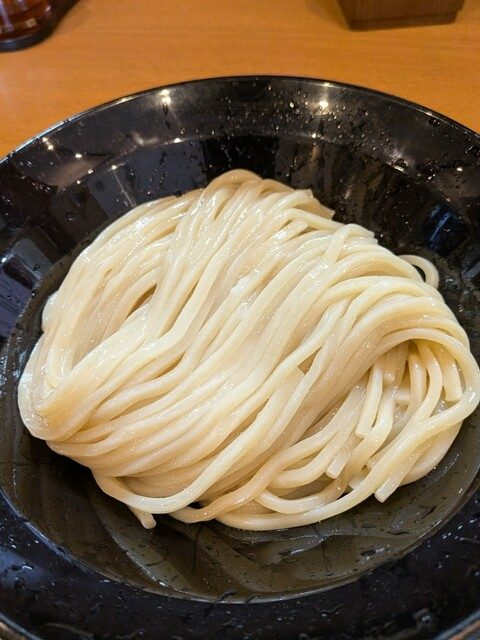
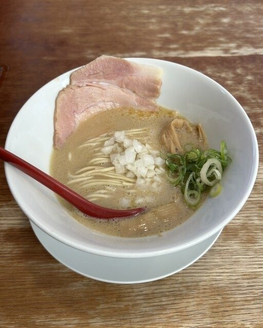
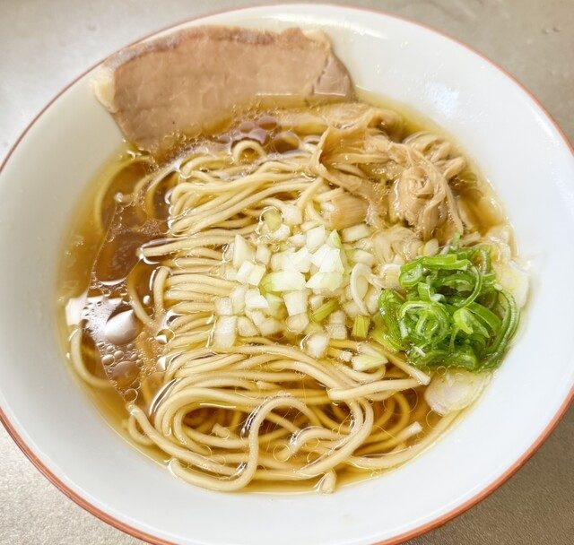
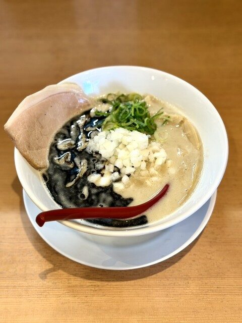
混み合っているときは、呼びベルをお渡ししております。列にお並びいただかなくて結構ですので、お車の中などでお待ちください。順番になりましたらお呼びいたします。
つけめんは小盛（茹で前170g）を30円引きで承っております。大盛・特盛もご用意しておりますので、お申し付けください。
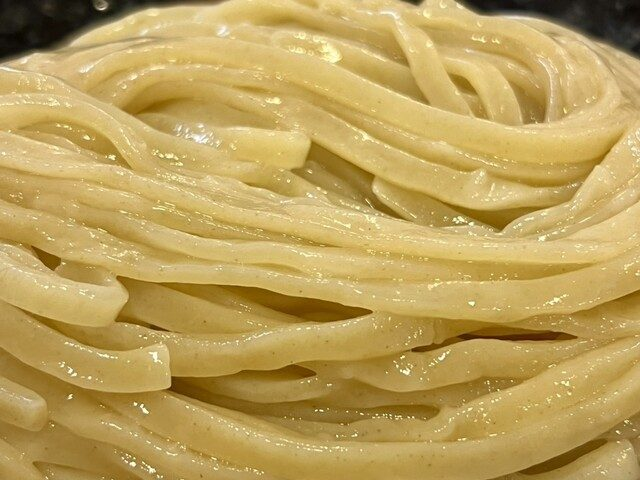
INABASTYLEの麺
久喜のお店では、もち小麦とタピオカ粉を配合した麺を使い、肉汁のつけめんをお出ししております。 和出汁と鶏白湯の二通りのつけ汁をご用意しております。生卵をお付けしたつけめんもございます。 鶏白湯のらーめんと油そばもお出ししております。
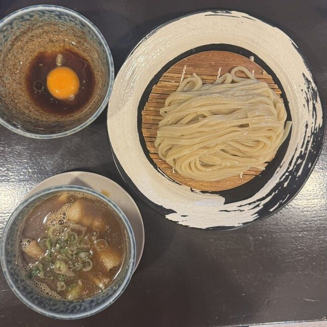
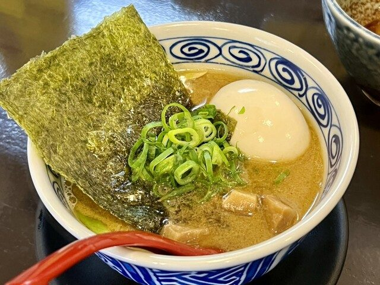
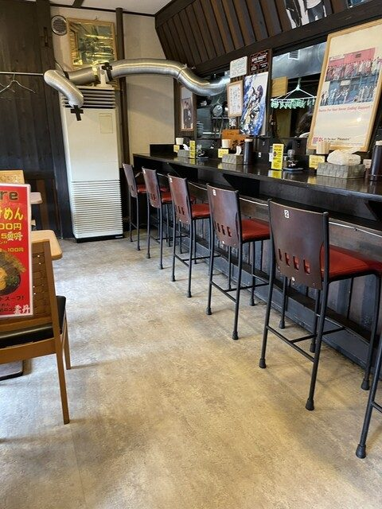
麺もつけ汁も、営業時間も定休日も別のものです。お出かけの前に、こちらでお確かめください。
| 古河本店 | INABASTYLE（久喜） | |
|---|---|---|
| 主にお出ししているもの | 鶏白湯・鶏清湯のらーめんとつけめん | 肉汁のつけめん |
| 麺 | 磯屋商店さんの特注麺 | もち小麦とタピオカ粉を配合した麺 |
| 営業時間 | 平日 11:30〜14:30／18:00〜20:30 土日 11:30〜20:00（通し） |
平日 11:30〜14:30（昼のみ） 土日 11:30〜14:30／18:00〜20:30 |
| 定休日 | 火曜 | 月曜・火曜 |
| お待ちいただくとき | 呼びベルをお渡しします（お並びいただきません） | 店内でお待ちいただいております |
| お電話 | 0280-48-6676 | 0480-96-1127 |
出来立てのつけめんとチャーシュー丼を、お持ち帰りの容器でお渡しします。 具入りの冷凍スープと生麺を詰めたおみやげらーめん、 高速道路のパーキングエリア向けに開発した箱入りらーめん（4食入り）もご用意しております。
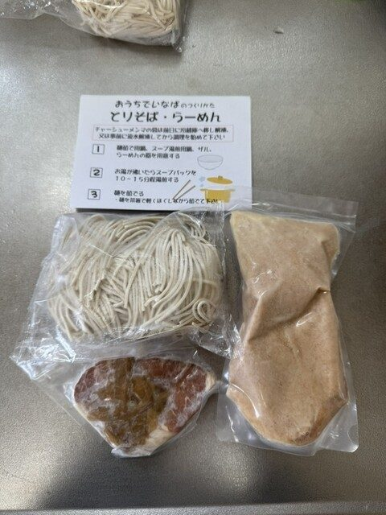
二軒とも、クレジットカード・電子マネー・QRコード決済は承っておりません。現金をお持ちください。
ご来店の順にご案内しております。古河本店では、混み合うときに呼びベルをお渡ししております。
古河本店は火曜、INABASTYLEは月曜・火曜がお休みです。夜の営業も別ですので、上の表でお確かめください。
限定のお品や、その週だけ昼のみの営業になる日、混み合う見込みなどは、Xでお伝えしております。お出かけの前にご覧ください。
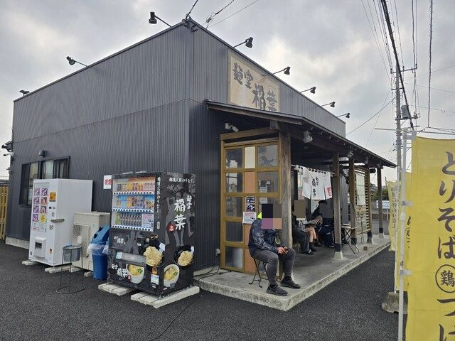
| 住所 | 〒306-0052 茨城県古河市大山560-1 |
|---|---|
| 電話 | 0280-48-6676 |
| 営業時間 | 平日 11:30〜14:30／18:00〜20:30 土日 11:30〜20:00（通し営業） |
| 定休日 | 火曜日 |
| アクセス | JR古河駅（西口）からお車で14分 |
| ご予約 | 承っておりません（混雑時は呼びベルをお渡しします） |
| お支払い | 現金のみ |
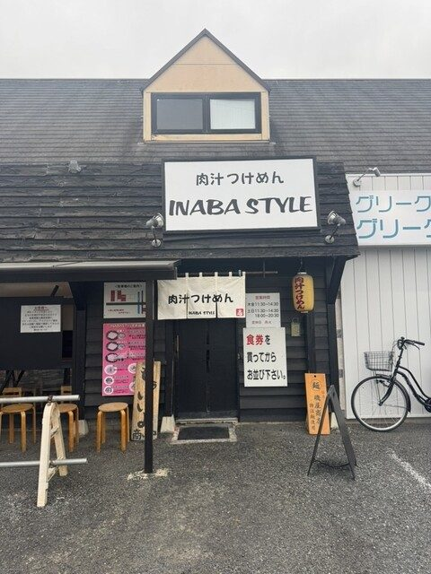
| 住所 | 〒346-0011 埼玉県久喜市青毛3-13-19 1F |
|---|---|
| 電話 | 0480-96-1127 |
| 営業時間 | 平日 11:30〜14:30（昼のみ） 土日 11:30〜14:30／18:00〜20:30 |
| 定休日 | 月曜日・火曜日 |
| アクセス | 東武日光線 幸手駅（西口）から徒歩12分 |
| ご予約 | 承っておりません |
| お支払い | 現金のみ |
※ その週の営業はX（@mendou_inaba）でお知らせしております。 お品書きの金額は改定することがございますので、店頭のお品書きもあわせてご覧ください。